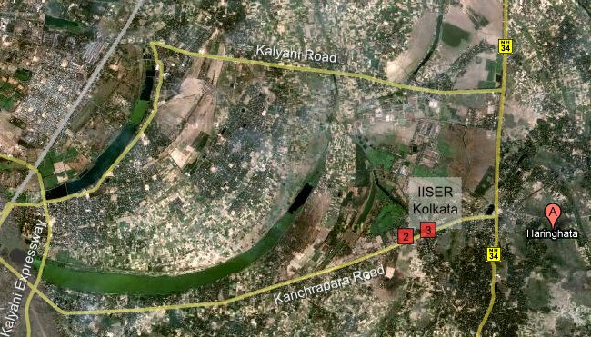

IISER Kolkata is presently located in Haringhata. You can reach IISER by road or train.
The fares for the various commutes between Kanchrapara and our campus were taken from an IISER brochure. The fares will obviously change (most likely increase) as time passes. The train timings have been updated on 11 January 2009. Though train schedules do not change often, it's a good idea to get a copy of the railway timetable from a station.

You can view a more detailed map, including annotations of our hostels and guest house at wikimapia.
The train station nearest to the Haringhata campus is Kanchrapara. The Kanchrapara station is on the Sealdah line (train timings given below) and it is only 8 km from our institute along Kanchrapara road, which connects the Kalyani expressway to the NH-34.
| Sealdah to Kanchrapara | Kanchrapara to Sealdah | ||
|---|---|---|---|
| train | departure | train | departure |
| Kalyani Simanta | 0725 | Krishnanagar | 0702 |
| Gede Local | 0740 | Gede Local arr Dum Dum | 0710 |
| Lalgola | 0810 | Kalyani Simanta | 0730 |
| Kalyani Simanta | 0830 | Ranaghat | 0753 |
| Shantipur | 0858 | Ranaghat | 0803 |
| Kalyani Simanta | 0920 | Krishnanagar | 0812 |
| Krishnanagar | 0935 | Shantipur | 0823 |
| Ranaghat | 0950 | Kalyani Simanta | 0830 |
| Gede Local | 0858 | Gede Local | 0838 |
| Shantipur | 1032 | Lalgola | 0849 |
| Krishnanagar | 1048 | Ranaghat | 0903 |
| Kalyani Simanta | 1120 | Kalyani Simanta | 0931 |
| Shantipur | 1135 | Shantipur | 0938 |
| Krishnanagar | 1202 | Krishnanagar | 0957 |
| Lalgola | 1220 | Gede Local | 1007 |
| Kalyani Simanta | 1225 | Krishnanagar | 1054 |
| Gede Local | 1245 | Shantipur | 1105 |
| Shantipur | 1300 | Kalyani Simanta | 1120 |
| Krishnanagar | 1325 | Lalgola | 1127 |
| Gede Local | 1405 | Gede Local | 1158 |
| Lalgola dep at Dum Dum | 1413 | Shantipur | 1236 |
| Shantipur | 1420 | Ranaghat | 1302 |
| Kalyani Simanta | 1440 | Krishnanagar | 1318 |
| Ranaghat | 1505 | Kalyani Simanta | 1336 |
| Kalyani Simanta | 1525 | Lalgola | 1400 |
| Krishnanagar | 1535 | Shantipur | 1412 |
| Shantipur | 1545 | Kalyani Simanta | 1429 |
| Krishnanagar | 1615 | Krishnanagar | 1447 |
| Ranaghat | 1622 | Shantipur | 1521 |
| Kalyani Simanta | 1650 | Ranaghat | 1553 |
| Shantipur | 1657 | Gede Local | 1542 |
| Lalgola | 1700 | Krishnanagar | 1622 |
| Gede Local | 1715 | Kalyani Simanta | 1645 |
| Krishnanagar | 1736 | Shantipur | 1651 |
| Shantipur | 1750 | Gede Local | 1714 |
| Kalyani Simanta | 1812 | Krishnanagar | 1726 |
| Gede Local | 1820 | Kalyani Simanta | 1745 |
| Krishnanagar | 1840 | Ranaghat | 1756 |
| Shantipur | 1850 | Shantipur | 1811 |
| Kalyani Simanta | 1910 | Lalgola | 1900 |
| Ranaghat dep at Dum Dum | 1912 | Ranaghat | 1911 |
| Gede Local | 1917 | Kalyani Simanta | 1918 |
| Krishnanagar | 1930 | Shantipur | 1929 |
| Shantipur | 1950 | Krishnanagar | 1940 |
| Kalyani Simanta | 2010 | Kalyani Simanta | 2015 |
| Ranaghat | 2030 | Shantipur | 2013 |
| Shantipur | 2045 | Krishnanagar | 2028 |
| Krishnanagar | 2100 | Shantipur | 2049 |
| Gede Local | 2130 | Gede Local | 2115 |
| Shantipur | 2150 | Kalyani Simanta | 2131 |
| Kalyani Simanta | 2205 | Lalgola | 2139 |
| Ranaghat | 2206 | ||